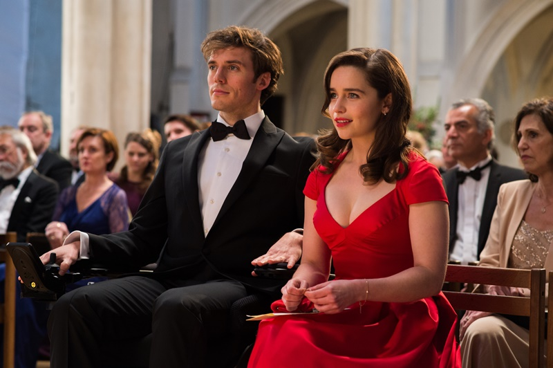
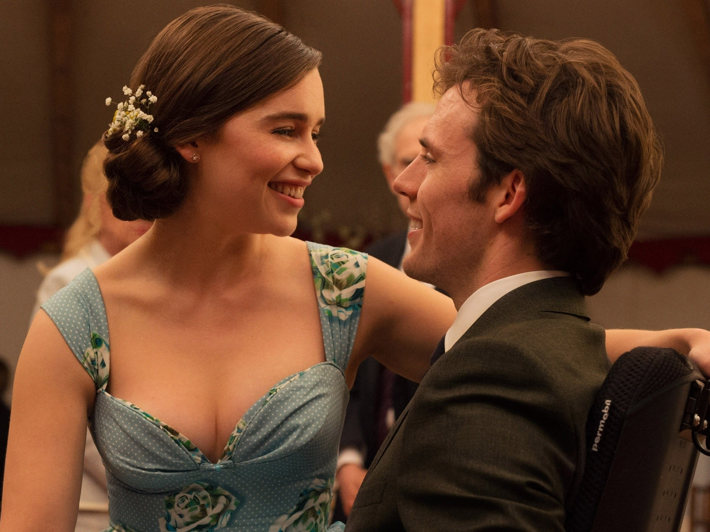
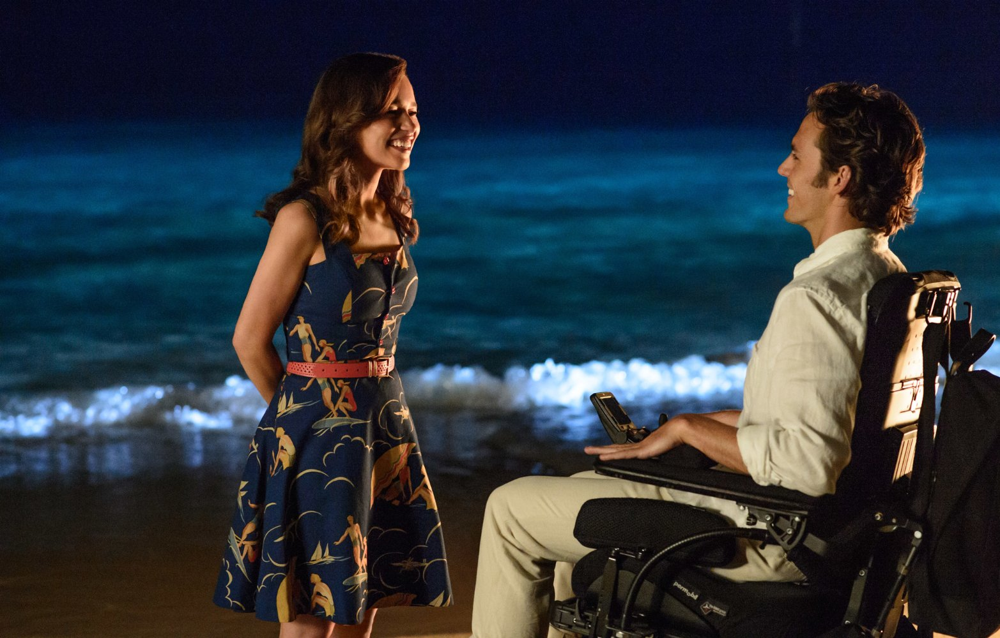
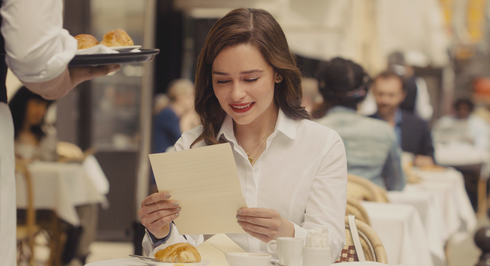

Louisa Clark é uma jovem de 26 anos que vive com sua família em uma pequena cidade inglesa. Ela trabalha em uma cafeteria local e leva uma vida simples, sempre ajudando financeiramente seus familiares. Quando a cafeteria fecha, Louisa perde seu emprego e precisa encontrar uma nova fonte de renda. Após diversas tentativas, ela consegue um trabalho como cuidadora de Will Traynor. Will era um empresário de sucesso, apaixonado por viagens, esportes radicais e aventuras. No entanto, sua vida muda completamente após ser atropelado por uma motocicleta, tornando-se tetraplégico. No início da convivência, Will demonstra ser uma pessoa amarga e distante. Ele não aceita facilmente a presença de Louisa e frequentemente faz comentários sarcásticos. Mesmo assim, Louisa continua tentando animá-lo. Com o passar do tempo, a amizade entre os dois cresce. Louisa passa a conhecer melhor os sonhos, medos e frustrações de Will. Ao mesmo tempo,Will incentiva Louisa a sair de sua zona de conforto e acreditar mais em si mesma.
No início do filme, Louisa Clark trabalha em uma pequena cafeteria local, onde passa boa parte de seus dias e ajuda financeiramente sua família. No entanto, o estabelecimento acaba fechando, fazendo com que ela fique desempregada. A necessidade de encontrar um novo trabalho a leva até uma oportunidade inesperada: cuidar de Will Traynor. Esse acontecimento é fundamental, pois é o que permite que os dois personagens se conheçam e iniciem uma relação que mudará suas vidas.

Quando começa a trabalhar na casa dos Traynor, Louisa encontra um Will completamente diferente daquele descrito por seus pais. Antes aventureiro e cheio de energia, ele agora é frio, sarcástico e desmotivado. O primeiro contato entre eles é difícil, já que Will demonstra resistência à presença da nova cuidadora. Apesar disso, Louisa decide não desistir e tenta conquistar sua confiança aos poucos.

Com o passar do tempo, Louisa e Will começam a se conhecer melhor. O jeito divertido, espontâneo e otimista de Louisa faz com que Will volte a sorrir e a se interessar por pequenas coisas do dia a dia. Ao mesmo tempo, Will passa a incentivar Louisa a acreditar mais em si mesma e a buscar novas experiências. Aos poucos, a relação profissional se transforma em uma amizade sincera e profunda.

Um dos primeiros passeios organizados por Louisa é uma ida a um concerto de música clássica. Inicialmente, ela acredita que não irá gostar da experiência, mas acaba se emocionando e descobrindo um novo mundo. O momento representa a influência positiva que Will exerce sobre Louisa, incentivando-a a experimentar coisas diferentes e sair da rotina.

Durante o casamento da irmã de Will, Alicia, Louisa usa um vestido vermelho que chama a atenção do protagonista. Nesse evento, os dois compartilham momentos especiais, dançam juntos e demonstram claramente o carinho que sentem um pelo outro. É um dos momentos mais românticos do filme e marca o fortalecimento da relação entre eles.

Determinada a proporcionar experiências inesquecíveis para Will, Louisa organiza uma viagem para a ilha Maurício. Lá, os dois aproveitam dias tranquilos à beira-mar, compartilham conversas importantes e vivem momentos felizes juntos. Durante a viagem, Louisa revela seus sentimentos, e o casal vive um dos momentos mais emocionantes da história.

Nos acontecimentos finais do filme, Will deixa uma carta para Louisa, na qual demonstra todo o amor, gratidão e admiração que sente por ela. Na mensagem, ele a incentiva a viver intensamente, conhecer novos lugares e aproveitar as oportunidades que a vida oferece. A carta representa o legado deixado por Will e simboliza o crescimento pessoal de Louisa ao longo da história.
Após tudo o que viveu, Louisa decide seguir em frente e realizar sonhos que antes pareciam distantes. Inspirada pelos conselhos de Will, ela viaja para Paris e inicia uma nova fase de sua vida, mais independente e confiante. A cena final mostra que, apesar das dificuldades, as experiências vividas ao lado de Will a transformaram profundamente, ensinando-a a aproveitar a vida da melhor maneira possível.
